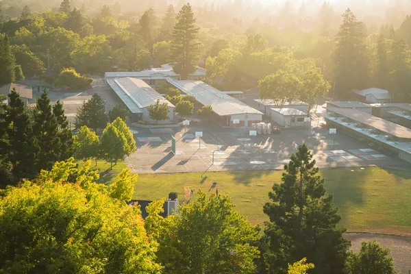
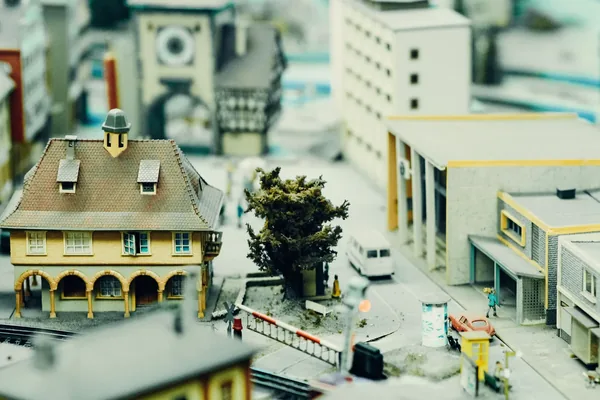
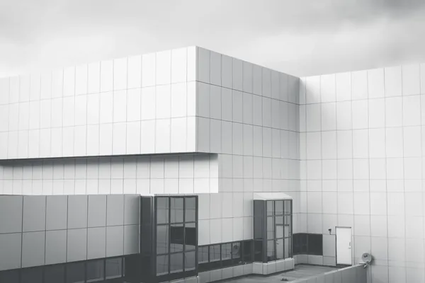

Wettbewerbe
Drei Wettbewerbsbeiträge der letzten Jahre: zwei realisierte erste Preise und ein dritter Preis, den das Modell zeigt.
Wettbewerbe als Raster und Liste
-

Schulzentrum Kerpen
-

Quartiersschule Düsseldorf
-

Verwaltungszentrum Aachen
| Nr | Projekt | Ort | Jahr | Typ | Maßnahme | Abbildung |
|---|---|---|---|---|---|---|
| 01 | Schulzentrum Kerpen | Kerpen | 2026 | Wettbewerb | Wettbewerb, 1. Preis, realisiert | Foto |
| 10 | Quartiersschule Düsseldorf | Düsseldorf | 2023 | Wettbewerb | Wettbewerb, 3. Preis | Modell |
| 14 | Verwaltungszentrum Aachen | Aachen | 2022 | Wettbewerb | Wettbewerb, 1. Preis, realisiert | Foto |